1) Получить от преподавателя на практике логин и пароль доступа к учебному серверу kubsu-dev.ru. Подключиться к нему по SSH с помощью клиента Putty, команды ssh или онлайн-версии ssh-клиента.
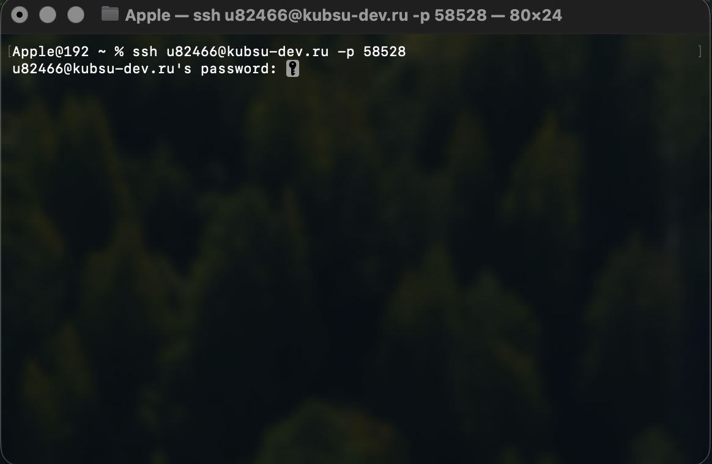
Выбран SSH – это тип соединения, обеспечивающий шифрование всех передаваемых данных (логин, пароль, команды). Для подключения я использовал SSH-клиент и ввел команду:
ssh u82466@kubsu-dev.ru -p 58528
Здесь kubsu-dev.ru – это сервер, к которому я подключаюсь, а u82466 – имя пользователя, под которым выполняется вход. Параметр -p указывает порт для подключения – в данном случае это порт 58528, предназначенный для общего пользования. После отправки команды сервер запросил пароль – я ввел комбинацию, предоставленную преподавателем.
При успешной аутентификации появляется приглашение командной строки – внизу видна строка u82466@web-server, что означает: пользователь u82466 авторизован и готов к работе на веб-сервере.
2) С помощью команды ping на учебном сервере узнать IP-адрес веб-сервера kubsu.ru, сделать скриншот вызова команды ping, добавить скриншот в git- репозитарий задания.
Команда: ping -c 1 kubsu.ru
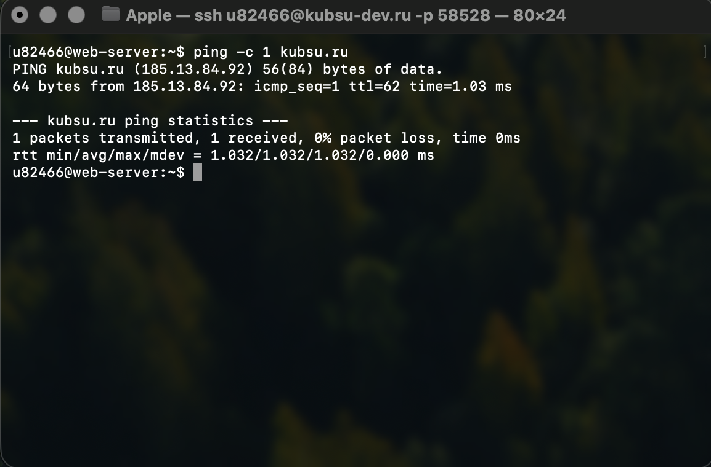
Что делает ping: Утилита ping отправляет ICMP-запросы на указанный узел и измеряет время ответа. Опция -c 1 ограничивает количество запросов одним.
Результат ping: В первой строке вывода виден IP-адрес сервера 185.13.84.92. Пакет успешно дошёл (потеря 0%), среднее время ответа составило 1.032 мс.
3) С помощью команды nslookup узнать A-записи и MX-записи домена kubsu.ru и kubsu-dev.ru, добавить скриншоты в git-репозитарий задания.
Команда: nslookup -type=A kubsu.ru
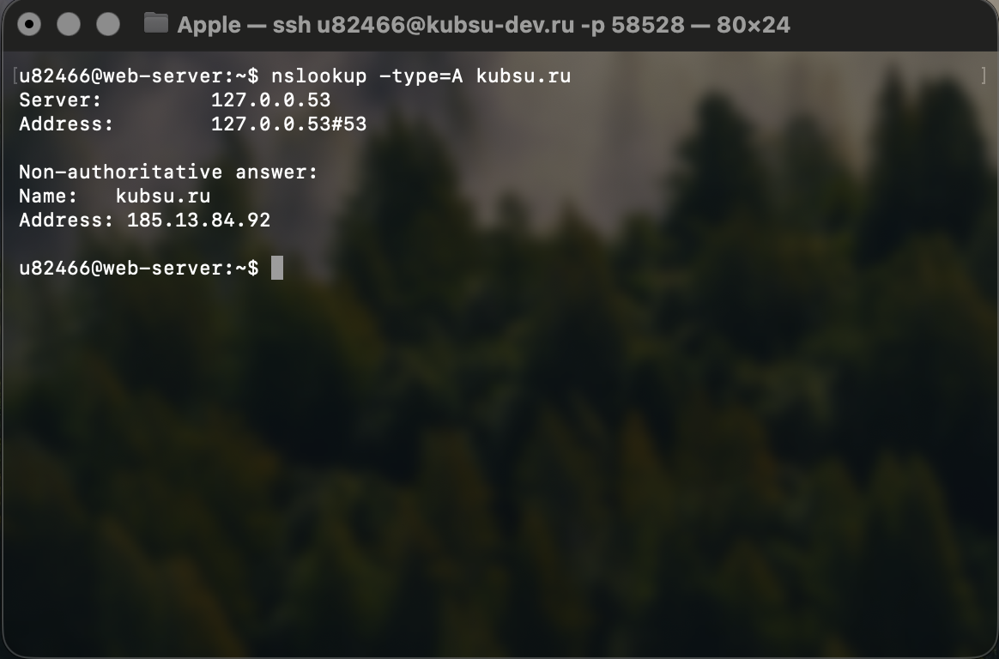
Назначение: Эта команда обращается к DNS-серверу с целью получения A-записи для указанного домена — такая запись содержит привязанный к доменному имени IPv4-адрес.
Вывод: Согласно ответу от DNS, домен kubsu.ru привязан к IP-адресу 185.13.84.92. Ответ неавторитативный, но содержит корректные данные.
Команда: nslookup -type=MX kubsu.ru
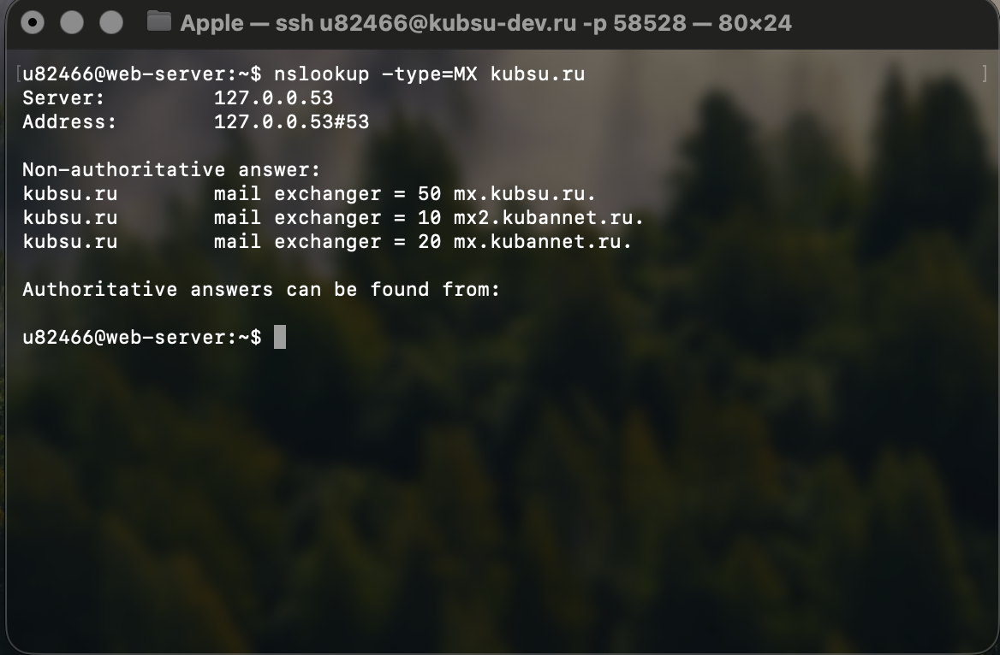
Смысл команды: Выполняется запрос MX-записей домена — эти записи определяют, через какие почтовые серверы доставляется почта для данного домена, а также их приоритеты. Bолее высокий приоритет у сервера с меньшим числовым значением.
Полученные данные: Домен kubsu.ru обслуживают три почтовых сервера с разными приоритетами:
приоритет 10: mx2.kubannet.ru
приоритет 20: mx.kubannet.ru
приоритет 50: mx.kubsu.ru
Сервер с значением 10 является основным.
Аналогично для kubs-dev.ru
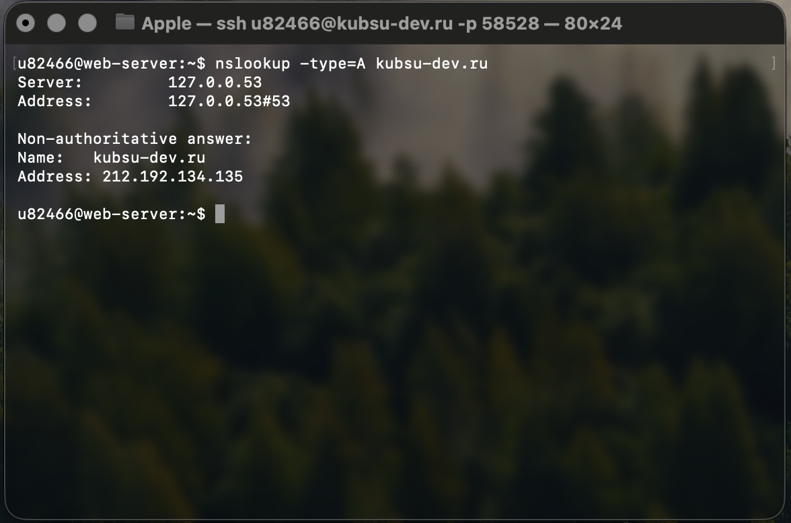
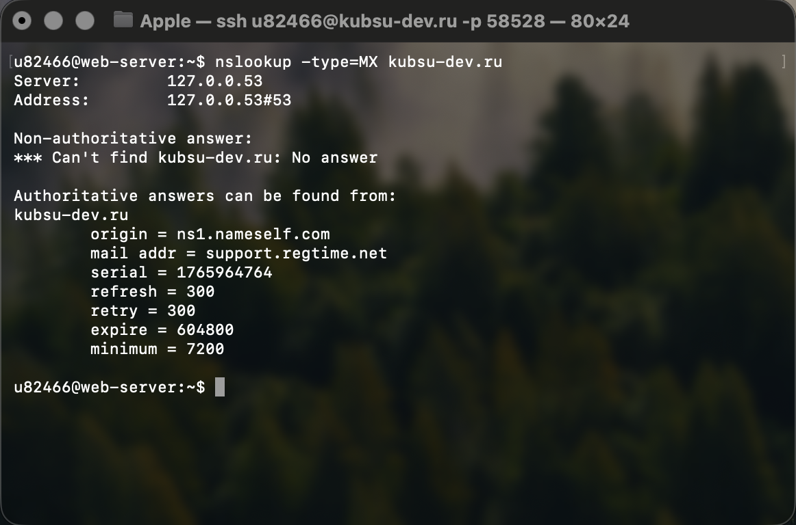
kubsu-dev.ru соовтествует адрес 212.192.134.134.Эээ... Для доменa kubsu-dev.ru MX-записей нет. Т.е у домена нет своих почтовых серверов. Но в авторизованом ответе указаны днс сервера для этого доменa
4) С помощью команды whois узнать дату регистрации домена kubsu.ru и kubsu- dev.ru, добавить скриншоты в git-репозитарий задания.
Команда: whois kubsu.ru
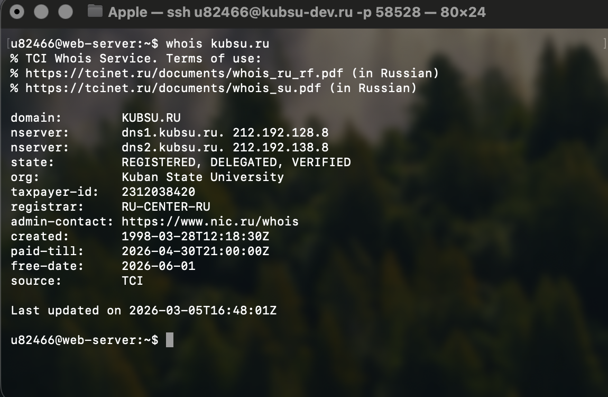
Назначение: С помощью утилиты whois выполняется обращение к базе данных регистратора для получения публичных регистрационных сведений о домене.
Вывод: В полученных данных обнаружена запись created: 1998-03-28T12:18:30Z — это дата регистрации домена kubsu.ru (28 марта 1998 года). Также видно, что срок действия домена оплачен до 30 апреля 2026 года.
Команда: whois kubsu-dev.ru
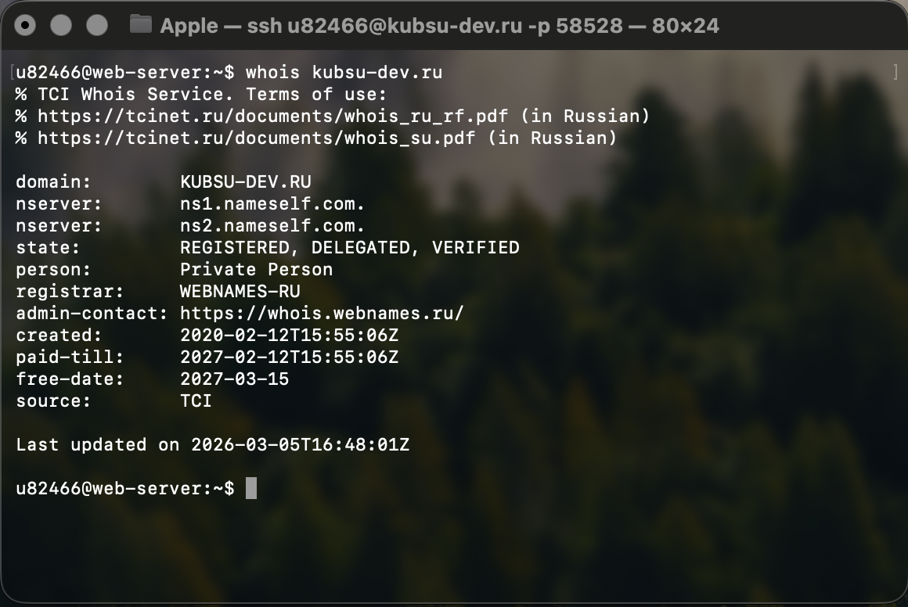
Смысл команды: Аналогичный запрос регистрационных данных, но для домена kubsu-dev.ru.
Результат: Домен kubsu-dev.ru создан 12 февраля 2020 года (подтверждается строкой created: 2020-02-12T15:55:06Z). Оплаченный срок регистрации истекает 12 февраля 2027 года.
5) Сделать веб-страницу index.html со скриншотами, добавить ее в git, с помощью SSH склонировать репозитарий со скриншотами и страницей в каталог www. Веб- страница должна открываться по адресу http://ваш_логин.kubsu- dev.ru/каталог_задания_1/
Создал страницу index.html со скриншотами.
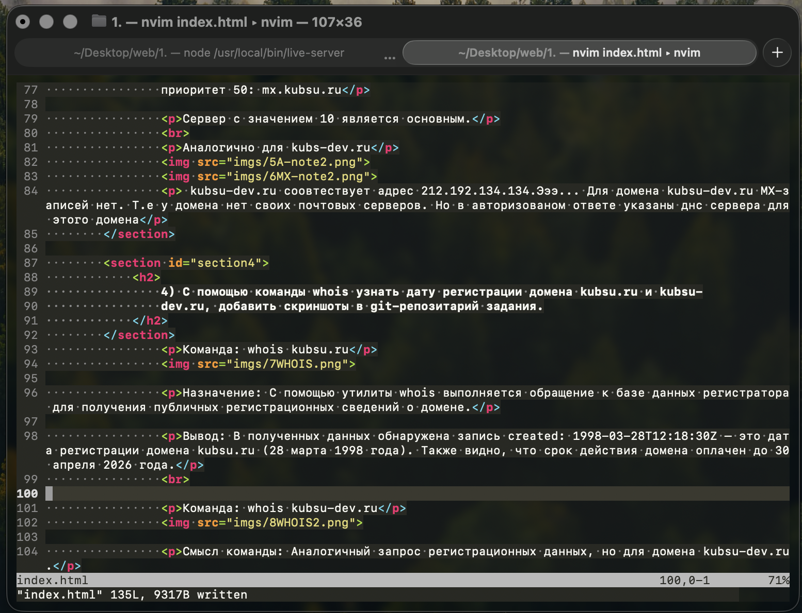
Создал папку imgs со скриншотами, которые используются в index.html.
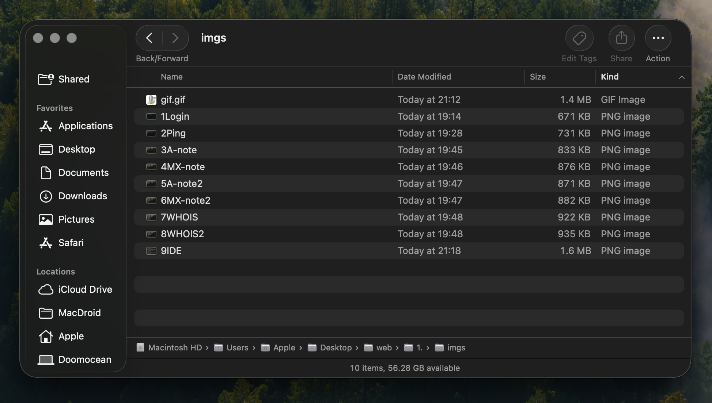
Инцирозировал git репозиторий с помощью команды:
git int
Добавил все изменения с помощью команды:
git add *
Зафиксировал изменения командой:
git commit -m "inital commit"
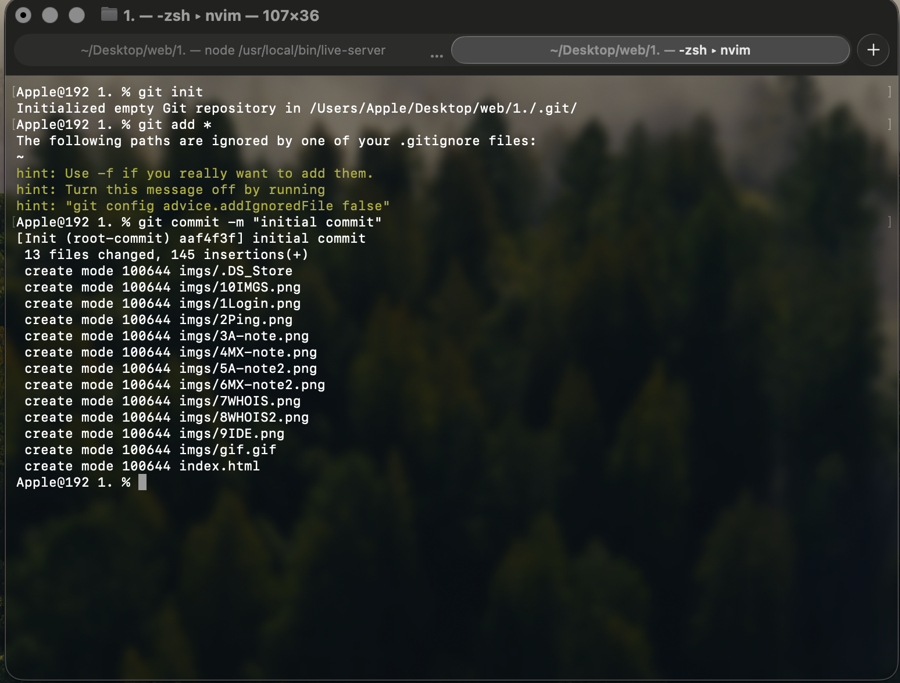
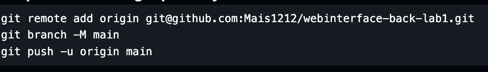
Склонируем теперь на удалённый сервер готовый сайт с помощью команды:
git clone https://github.com/...
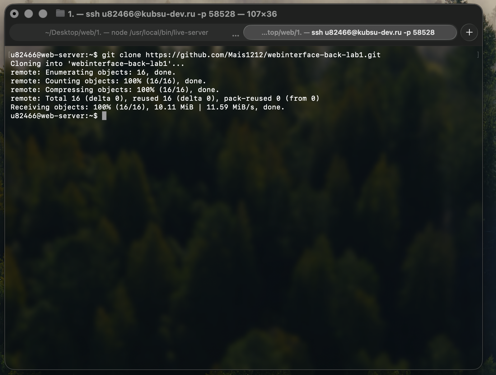
Теперь с помощью команд:
mkdir www/web1/
mv webinterface-back-lab1/* www/web1
Создадим и переместим всё в папку web1.
Теперь создадим ssh ключи с помощью утилиты ssh-keygen. Но перед этим создадим директорию для хранения ssh ключей с названием .ssh, затем перейдём в ней. В командах это все выглядит как :
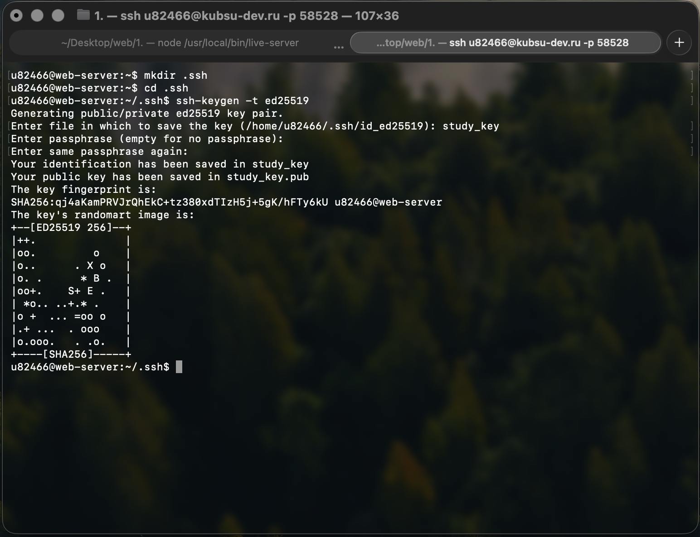
В результате выполнения команд будут созданы study_key & study_key.pub - приватный и публичный ключ соответственно. Публичный ключ добавим на гитхаб.
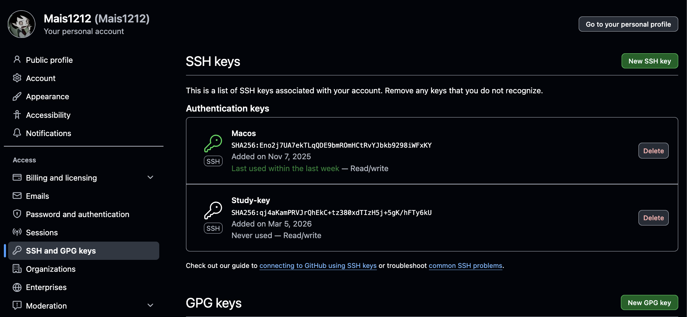
6) С помощью программы FileZilla или любого другого клиента SFTP соединиться с учебным сервером с вашим логином и паролем по протоколу SFTP и скопировать на локальный компьютер файлы задания из каталога www. Сделать скриншот SFTP-клиента после скачивания файлов, добавить скриншот в GIT и на страницу.
Программа: Встроенный клиент командной строки sftp (протокол SFTP)
Что делает: Клиент sftp устанавливает защищённое соединение по протоколу SFTP с сервером kubsu-dev.ru (порт 58528) под логином u82466. После подключения с помощью команды cd www выполнен переход в целевой каталог, а затем командой get -r web1 все файлы из каталога ~/www/web1 были скопированы на локальный компьютер, в папку откуда Я запустил комманду sftp....
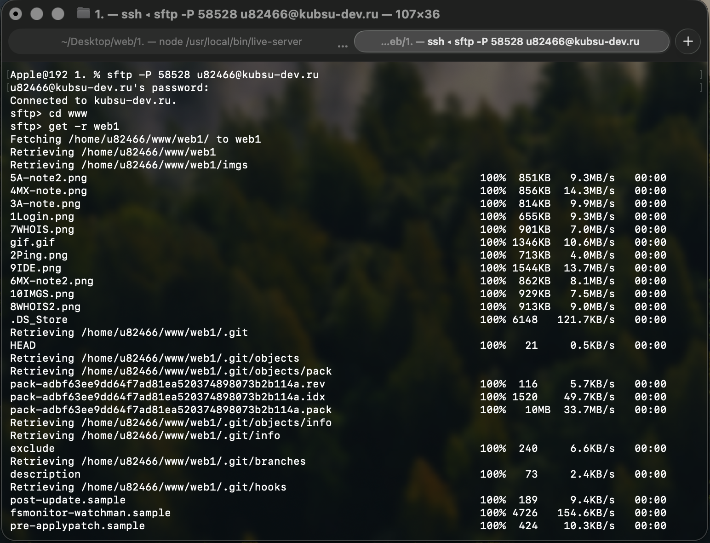
Результат: На локальной машине появились все файлы задания (скриншоты и index.html), что подтверждает скриншот окна терминала с процессом подключения и скачивания файлов через sftp + комманды ls завершения.
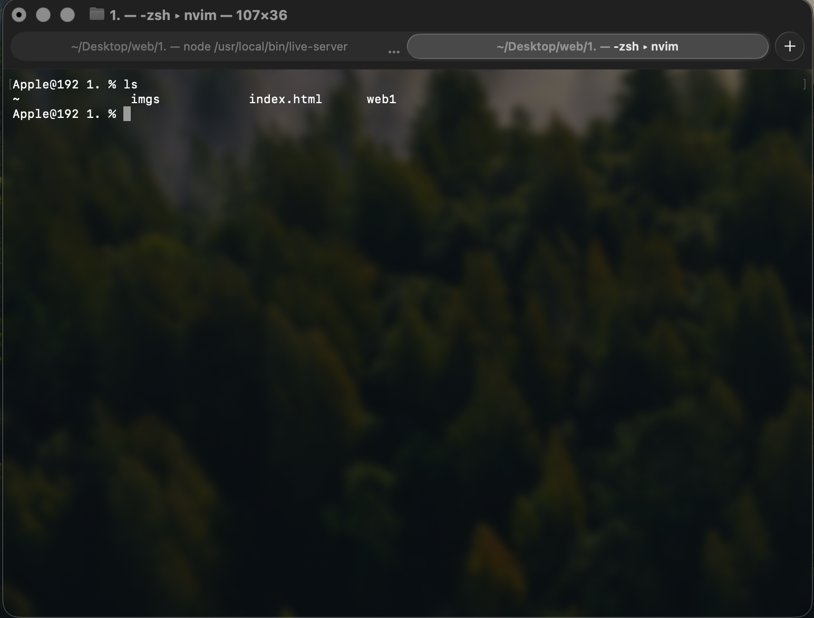